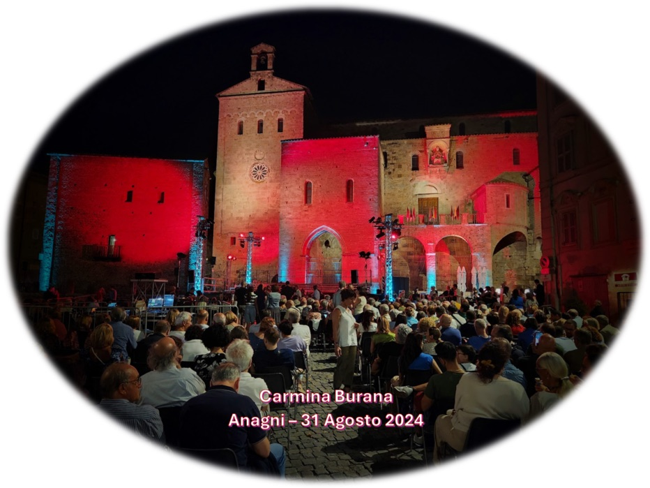
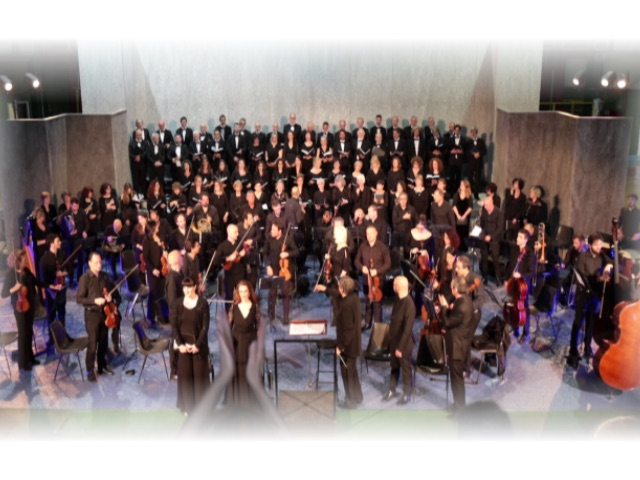

Stagione concertistica
26/
26/
27
Si apre con il Requiem di Mozart. Messe, oratori e grandi pagine corali con orchestra, a Roma e nel Lazio.
Prossimi e recenti
Archivio completo04Ott 2026Prossimo

W. A. Mozart
Requiem K 626
Rignano Flaminio · Autunno Musicale 2026Dettagli e calendario →06Giu 2026Stagione 25/26

C. Orff
Carmina Burana
RomaNell'archivio →28Mar 2026Stagione 25/26

W. A. Mozart
Requiem K 626
Stagione 2025/26Nell'archivio →24Ott 2025Stagione 25/26

G. Rossini
Stabat Mater
RomaNell'archivio →Ascolta i nostri concerti
Registrazioni integrali dal vivo, con orchestra e solisti. Un archivio che cresce a ogni stagione.
Tutte le registrazioni
Mozart · Grande Messa in do minore K 427 2023
Orff · Carmina Burana 2024
Rossini · Petite Messe Solennelle 2023
Il video si carica da YouTube (senza cookie) solo quando premi play.
Il coro
La nostra storia
Nato nel 2019 dall'Associazione Roma Musicanta: 44 voci per la musica colta, sacra e profana.
Scopri
Il Maestro
Claudio Maria Micheli: trent'anni sul podio, collaboratore di Ennio Morricone.
BiografiaSATB
Canta con noi
Cerchiamo nuove voci. Prove il mercoledì e due venerdì al mese, a Roma.
Audizioni
Per gli organizzatori
Repertorio e contatti
Una rassegna, una festa patronale, un concerto di Natale?
Portiamo in concerto Requiem, messe e oratori con orchestra: circa 44 voci, fino a 70 insieme al Coro Ruggero Giovannelli.